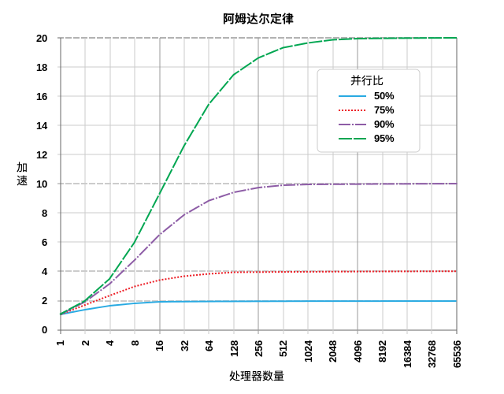
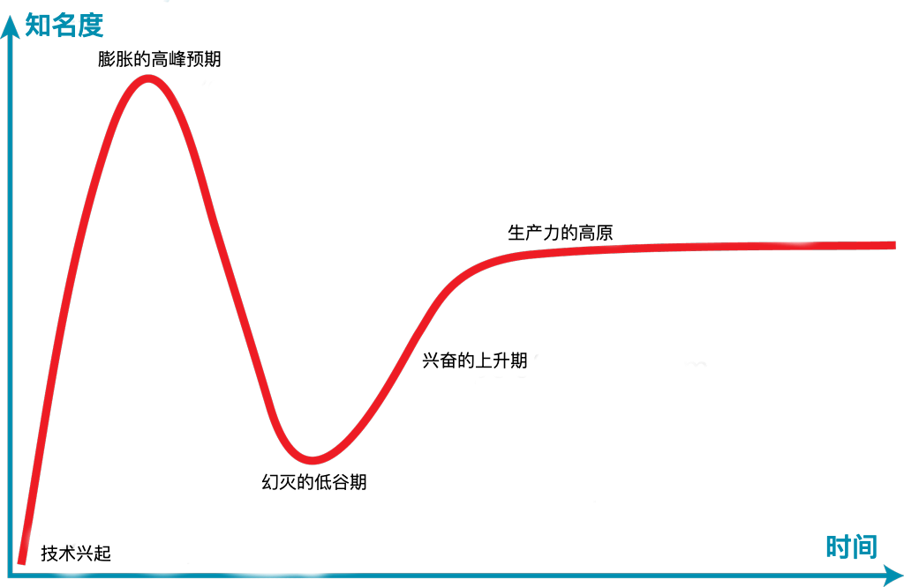

对开发人员有用的定律、理论、原则和模式

hacker-laws 的的中文翻译。
对开发人员有用的定律、理论、原则和模式。(Laws, Theories, Principles and Patterns that developers will find useful.)
为了方便阅读，维基百科增加了中文链接。英文链接表示 hacker-laws 项目尚未完成的主题。
- 介绍
- 定律
- 阿姆达尔定律 (Amdahl's Law)
- 布鲁克斯法则 (Brooks's Law)
- 康威定律 (Conway's Law)
- 坎宁汉姆定律 (Cunningham's Law)
- 邓巴数字 (Dunbar's Number)
- 盖尔定律 (Gall's Law)
- 古德哈特定律 (Goodhart's Law)
- 汉隆的剃刀（Hanlon's Razor）
- 侯世达定律 (Hofstadter's Law)
- 哈伯特定律 (Hutber's Law)
- 技术成熟度曲线 (The Hype Cycle & Amara's Law)
- 隐式接口定律 (Hyrum's Law or The Law of Implicit Interfaces)
- 梅特卡夫定律 (Metcalfe's Law)
- 摩尔定律 (Moore's Law)
- 墨菲定律 (Murphy's Law / Sod's Law)
- 帕金森定理 (Parkinson's Law)
- 过早优化效应 (Premature Optimization Effect)
- 普特定律 (Putt's Law)
- 里德定律 (Reed's Law)
- 复杂性守恒定律 (The Law of Conservation of Complexity or Tesler's Law)
- 抽象泄漏定律 (The Law of Leaky Abstractions)
- 帕金森琐碎定理 (The Law of Triviality)
- Unix 哲学 (The Unix Philosophy)
- Spotify 模型 (The Spotify Model)
- 沃德勒定律 (Wadler's Law)
- 惠顿定律 (Wheaton's Law)
- 原则
- 呆伯特法则 (The Dilbert Principle)
- 帕累托法则 (The Pareto Principle or The 80/20 Rule)
- 彼得原理 (The Peter Principle)
- 鲁棒性原则 (The Robustness Principle or Postel's Law)
- SOLID
- 单一功能原则 (The Single Responsibility Principle)
- 开闭原则 (The Open/Closed Principle)
- 里氏替换原则 (The Liskov Substitution Principle)
- 接口隔离原则 (The Interface Segregation Principle)
- 依赖反转原则 (The Dependency Inversion Principle)
- 不要重复你自己原则 (The DRY Principle)
- KISS 原则 (The KISS Principle)
- 你不需要它原则 (YAGNI)
- 分布式计算的谬论 (The Fallacies of Distributed Computing)
- 阅读清单
- TODO
- 招聘
介绍
当人们谈论开发时，会聊到许多定律。这个仓库收录了一些最常见的定律。
❗: 这个仓库包含对一些定律、原则以及模式的解释，但不提倡其中任何一个。 它们的应用始终存在着争论，并且很大程度上取决于你正在做什么。
定律
现在我们开始吧！
阿姆达尔定律 (Amdahl's Law)
阿姆达尔定律是一个显示计算任务潜在加速能力的公式。这种能力可以通过增加系统资源来实现，通常用于并行计算中。它可以预测增加处理器数量的实际好处，然而增加处理器数量会受到程序并行性的限制。
举例说明：如果程序由两部分组成，部分 A 必须由单个处理器执行，部分 B 可以并行运行。那么向执行程序的系统添加多个处理器只能获得有限的好处。它可以极大地提升部分 B 的运行速度，但部分 A 的运行速度将保持不变。
下图展示了一些运行速度的提升潜能的例子：

(图片来源: By Daniels220 at English Wikipedia, Creative Commons Attribution-Share Alike 3.0 Unported, https://en.wikipedia.org/wiki/File:AmdahlsLaw.svg)
可以看出，50％ 并行化的程序在使用大于 10 个处理单元之后的速度提升收效甚微，而 95％ 并行化的程序在使用超过一千个处理单元之后仍然可以显著提升速度。
随着摩尔定律减慢，单个处理器的速度增加缓慢，并行化是提高性能的关键。图形编程是一个极好的例子，现代着色器可以并行渲染单个像素或片段。这也是现代显卡通常具有数千个处理核心（GPU 或着色器单元）的原因。
参见：
布鲁克斯法则 (Brooks's Law)
软件开发后期，添加人力只会使项目开发得更慢。
这个定律表明，在许多情况下，试图通过增加人力来加速已延期项目的交付，将会使项目交付得更晚。布鲁克斯也明白，这是一种过度简化。但一般的论据是，新资源的时间增加和通信开销，会在短期内使开发速度减慢。而且，许多任务是密不可分的，换句话说，这样可以使更多的资源之间能轻易分配，这也意味着潜在的速度增长也更低。
谚语 九个女人不能在一个月内生一个孩子 与布鲁克斯法则同出一辙，特别是某些不可分割或者并行的工作。
这是《人月神话》的中心主题。
参见：
康威定律 (Conway's Law)
这个定律说明了系统的技术边界可以反应一个组织的结构，它通常会在改进组织时被提及。康威定律表明，如果一个组织被分散成许多小而无联系的单元，那么它开发的软件也是小而分散的。如果组织是更多地围绕以功能或服务为导向的垂直结构，那么软件系统也会反映这一点。
参见：
坎宁汉姆定律 (Cunningham's Law)
在网络上想得到正确答案的最好方法不是提问题，而是发布一个错误的答案。
据史蒂芬·麦克基迪说，沃德·坎宁汉姆早在 20 世纪 80 年代早期的时候建议他，在互联网上获得正确答案的最好方法不是提问题，而是发布一个错误的答案。麦克基迪称这为坎宁汉姆定律，而坎宁汉姆不以为然，并觉得这是“错误的引用”。最初这条定律只是用于描述 Usenet 上的社交行为，但后来也渐渐用于其他的在线社区（如 Wikipedia、Reddit、Twitter、Facebook 等）。
参见：
邓巴数字 (Dunbar's Number)
邓巴数字是对一个人能够保持稳定社会关系的人数的认知极限——在这种关系中，一个人知道每个人是谁，也知道每个人与其他人的关系如何。而对这一数字的确切值则有着一些不同意见。邓巴指出，人仅能轻松地维持 150 个稳定的关系。这样的关系在一个更社会化的背景中，便是当你碰巧在酒吧里碰到这些人时候，你不会因为加入他们而感到尴尬。邓巴数字的估计值一般在 100 至 250 之间。
和人与人之间稳定的关系一样，开发人员与代码库的关系也需要努力维护。当面对大型、复杂的项目，或许多项目的归属权时，我们会依赖于约定、策略和建模过程来进行扩展。邓巴数字不仅在办公室规模的扩大的过程中举足轻重，而且在设置团队工作范围，或决定系统何时应该注重于辅助建模和组织管理开销自动化的工具时，也是非常重要的。将邓巴数字放入工程内容中进行类比，那就是您能加入并有信心随叫随到进行轮换的项目数(亦或是单个项目的规范化复杂性)。
参见：
盖尔定律 (Gall's Law)
- 英文维基百科#Gall's_law>)
一个切实可行的复杂系统势必是从一个切实可行的简单系统发展而来的。从头开始设计的复杂系统根本不切实可行，无法修修补补让它切实可行。你必须由一个切实可行的简单系统重新开始。
约翰·盖尔>) (John Gall)
盖尔定律说明了设计高度复杂的系统很可能会失败。它们很难一蹴而就，更多是从简单的系统逐渐演变而来。
最典型的例子便是互联网。如今的互联网是一个高度复杂的系统，而它最早只是被定义为一种在学术机构之间共享内容的方式。互联网成功实现了最初的目标，并且随着时间不断演化，最终成就了如今的复杂繁荣。
参见：
古德哈特定律 (Goodhart's Law)
当压力施于其上以进行控制时，任何观测到的统计恒性都倾向消散。
查尔斯·古德哈特 (Charles Goodhart)
另见：
当一个措施本身成为目标时，它就不再是一个好的措施。
玛丽莲·斯特拉腾 (Marilyn Strathern)
根据这一定律，由测量驱动的优化反而可能导致测量结果本身的说服力下降。盲目使用一些过度严格筛选的方法 (KPIs) 可能会产生一些不良的影响。人们会倾向于用“钻空子”的行为去做局部优化，从而满足一些特定的度量标准，而不会在意整体的结果。
现实中的例子：
- Assert-free 测试可以达到代码覆盖率的预期，但度量的目的应该是创造经过良好测试的软件。
- 由 commits 的行数来评价开发人员的表现，从而导致了不合理的代码库扩增。
参见
汉隆的剃刀（Hanlon's Razor）
能解释为愚蠢的，就不要解释为恶意的。
罗伯特·汉隆 (Robert J. Hanlon)
这一原则表明，一个行为所产生的消极结果并不是恶意。相反，消极结果更有可能归咎于这些没有得到充分理解的行动或影响。
侯世达定律 (Hofstadter's Law)
即使考虑到侯世达定律，它也总是比你预期的要长。
侯世达 (Douglas Hofstadter)
在估计需要多长时间开发时，你可能会听到此定律。软件开发似乎有这样一条定理，即我们往往不能准确地估计需要多长时间才能完成。
参见：
哈伯特定律 (Hutber's Law)
改善即恶化。
帕特里克·哈伯特 (Patrick Hutber)
这个定律说明了对一个系统的改进会导致其他部分的恶化；或者它会将其他的恶化隐藏起来，并导致系统整体状态的退化。
例如，某个端点的响应延迟减少，就可能导致请求流中的吞吐量和容量问题进一步增加，并影响到另一个完全不同的子系统。
技术成熟度曲线 (The Hype Cycle & Amara's Law)
我们倾向于过高估计技术在短期内的影响，并低估长期效应。
罗伊·阿马拉 (Roy Amara)
技术成熟度曲线是高德纳咨询公司对技术最初兴起和发展的视觉展现。一图顶千言：

(图片来源: By Jeremykemp at English Wikipedia, CC BY-SA 3.0, https://commons.wikimedia.org/w/index.php?curid=10547051)
简而言之，这个周期表明，新技术及其潜在影响通常会引发一阵浪潮。团队快速使用这些新技术，有时会对结果感到失望。这可能是因为该技术还不够成熟，或者现实应用还没有完全实现。经过一段时间后，技术的能力提高了，使用它的实际机会会增加，最终团队也可以提高工作效率。罗伊·阿马拉简洁地总结了这一点：我们倾向于高估技术短期内的影响，并低估长期效应。
隐式接口定律 (Hyrum's Law or The Law of Implicit Interfaces)
当 API 有足够多的用户时，你在合同中的承诺已不重要：你系统的所有可观察行为都将被某些人所依赖。
海伦·赖特（Hyrum Wright）
隐式接口定律表明，当你的 API 有足够多的用户时，API 的所有行为（包括那些未囊括在公共说明中的一部分）最终都会被其他人所依赖。 一个简单的例子是 API 的响应时间这种非功能性因素，还有一个更微妙的例子是：用户使用正则表达式判断错误信息的类型时，即使 API 的公共说明没有说明消息的内容，来指示用户错误的类型，一些用户也可能会使用并更改该消息，而这实际上会破坏 API 的使用。
参见：
梅特卡夫定律 (Metcalfe's Law)
在网络理论中，系统的价值约等于系统用户数的平方。
这个定律基于一个系统中可能的连接对数量，并且与里德定律十分相近。奥德利兹科 (Odlyzko) 和其他人认为，里德定律和梅特卡夫定律夸大了系统本身的价值，因为它们没有考虑到网络效应中人类认知的限制。
参见:
摩尔定律 (Moore's Law)
集成电路中的晶体管数量大约每两年翻一番。
这条定律通常用于说明半导体和芯片技术提高的绝对速度。从 20 世纪 70 年代到 21 世纪前十年，摩尔的预测被证明是高度准确的。 近年来，这种趋势略有变化，部分原因受到量子隧穿效应影响。然而，并行化计算的进步以及半导体技术和量子计算潜在的革命性变化，可能意味着摩尔定律在未来几十年内继续保持正确。
墨菲定律 (Murphy's Law / Sod's Law)
凡是可能出错的事就一定会出错。
出自 爱德华·A·墨菲 ， 墨菲定律 说明了如果一件事有可能出错，那么就一定会出错。
这是一句开发人员间的俗语，在开发、测试甚至在生产中都有可能会发生一些令人意想不到的事情。而这一定律也可以参考在英式英语中更为常见的 索德定理 ：
如果某件事可能出错，那么它一定会在最糟糕的时候发生。
这些定律常常用于幽默嘲弄。但是，类似于 Confirmation Bias 和 Selection Bias 的现象很容易导致人们过分强调这些定律（即在大部分情况下，一件事的成功会显得司空见惯；而失败才会引起更多的注意和讨论）。
参见:
帕金森定理 (Parkinson's Law)
在工作能够完成的时限内，工作量会一直增加，直到所有可用时间都被填满为止。
基于官僚机构的研究背景，该定律被应用于软件开发中。该理论认为，团队在截止日期之前效率低下，然后在截止日期前赶紧完成工作，从而使实际截止日期变得随意。
将这个定理与侯世达定律相结合，则会获得更加悲观的观点：为了在规定时间内完成工作，工作将增多，花费比预期更长的时间。
参见：
过早优化效应 (Premature Optimization Effect)
过早优化是万恶之源。
在高德纳的《goto 语句的结构化编程》论文中，他写到：“程序员们浪费了大量的时间去思考或者担心他们的程序中的非关键部分的速度。而在考虑调试和维护的时候，这些所谓提高效率的做法实际上十分不妥。我们应该放弃小的效率点，并且要在 97% 的时间提醒自己，过早优化是万恶之源。而且连那关键的 3% 也不能够放过。”
然而，过早优化 （简而言之）可以定义为在我们知道需要做什么之前进行优化。
普特定律 (Putt's Law)
技术由两类人主导，一类是纯粹的管理人员， 一类是纯粹的技术人员。
普特定律常常遵循普特推论：
每一个技术层次，假以时日，能力将逆转。
这些结论表明，由于各种选择标准和群体组织的趋势，技术组织的工作层面将有一些技术人员，以及一些不了解复杂性和挑战的管理人员。这种现象可能是由于 The Peter Principe 或 Dilbert's Law 造成的。
但是，应该强调的是，诸如此类的定律是一种广泛的概括，可能适用于某些类型的组织，而不适用于其他组织。
参见：
里德定律 (Reed's Law)
大型网络，尤其是社交网络的效用会随着网络的大小呈指数级扩增。
这一定律基于图论，图论中的效用与可能的子组数量呈正比，并且该增长速度会比参与者的数量和可能的连接对数量要快。奥德利兹科 (Odlyzko) 和其他人认为，里德定律夸大了系统本身的价值，因为它们没有考虑到网络效应中人类认知的限制。
参见:
复杂性守恒定律 (The Law of Conservation of Complexity or Tesler's Law)
该定律表明系统中存在着一定程度的复杂性，并且不能减少。
系统中的某些复杂性是无意的。这是由于结构不良，错误或者糟糕的建模造成的。这种无意的复杂性可以减少或者消除。然而，由于待解决问题固有的复杂性，某些复杂性是内在的。这种复杂性可以转移，但不能消除。
该定律有趣的一点是，即使简化整个系统，内在的复杂性也不会降低。它会转移到用户，并且用户必须以更复杂的方式行事。
抽象泄漏定律 (The Law of Leaky Abstractions)
在某种程度上，所有非平凡的抽象都是有泄漏的。
乔尔斯·波尔斯基 (Joel Spolsky)
该定律指出，通常用于简化复杂系统的抽象，在某些情况下将底层系统泄漏出来，使得抽象表现出意外的行为。
例如加载文件并读取其内容。文件系统 API 是较低级别内核系统的抽象，它们本身是与磁盘（或 SSD 的闪存）上的数据更改相关的物理过程的抽象。在大多数情况下，处理文件（如二进制数据流）的抽象将起作用。但是，对于磁盘驱动器，顺序读取数据将比随机访问快得多（由于页面错误的开销增加）。但对于 SSD 驱动器，此开销不会出现。需要理解基础细节来处理这种情况（例如，数据库索引文件的良好结构可以减少随机访问的开销），开发人员需要合理的抽象，来处理不同的细节。
当引入更多的抽象时，上面的例子会变得更复杂。Linux 操作系统允许通过网络访问文件，但在本地表示为普通文件。如果存在网络故障，这种抽象将会泄漏。如果开发人员将这些文件视为普通文件，而不考虑它们可能会受到网络延迟和故障的影响，那么解决方案就会出错。
描述该定律的文章表明，过度依赖抽象，加上对底层过程的理解不足，实际上使得问题在某些情况下更加复杂。
参见：
真实的例子：
- Photoshop 启动缓慢：我过去遇到过一个问题，就是 Photoshop 启动缓慢，有时需要几分钟。问题好像是 Photoshop 启动时，会读取当前默认打印机的一些信息。但是，如果该打印机实际上是一台网络打印机，则可能需要很长的时间。将网络打印机与本地打印机当作同样的抽象，导致连接不良的情况下出现问题。
帕金森琐碎定理 (The Law of Triviality)
该定理显示，群体将给予更多的时间和注意力来处理琐碎的问题，而不是用来处理严肃而实质性的问题。
常见的虚构例子是委员会批准核电站的计划，他们大部分时间都在讨论自行车棚的结构，而不是电厂本身等更为重要的设计。如果没有大量的专业知识或者准备，很难给非常大的复杂主题讨论提供宝贵的意见。但是，人们希望看到更多意见。因此，他们倾向于将大量时间集中在很容易推敲，但不一定被看重的小细节上。
由上面的虚构例子产生了 Bike Shedding 的说法，以形容在琐碎细节上浪费时间这一行为。
Unix 哲学 (The Unix Philosophy)
Unix 哲学指软件组件应该很小，并专注于做一件特定的事情。将小而简单以及定义良好的单元组合在一起，而不是使用大而复杂的多用途程序，可以更轻松地构建系统。
像微服务架构这种现代实践可以认为是这种哲学的应用，其中服务很小，集中于做一件特定的事情，由简单的构建块组成复杂的行为。
Spotify 模型 (The Spotify Model)
Spotify 模型是团队和组织结构的一种方法，已被 Spotify 实验室推广开来。在此模型中，团队围绕功能而非技术进行组织。
Spotify 模型还普及了部落、行会以及章节的概念，这些是组织结构的其他组成部分。
沃德勒定律 (Wadler's Law)
任何语言设计中，讨论下面列表中某个要素所花费的总时间与其位置成正比。
- 语义 (Semantics)
- 语法 (Syntax)
- 词法 (Lexical syntax)
- 注释语法 (Lexical syntax of comments)
（简而言之，在语义上花费一个小时，就要在注释语法上花费八个小时）。
与 帕金森琐碎定理 类似, 沃德勒定律指出，在设计语言时，与这些特征的重要性相比，花在语言结构上的时间过多。
参见：
惠顿定律 (Wheaton's Law)
不要像个傻子一样。
威尔·惠顿 (Wil Wheaton)
这条定律由威尔 · 惠顿（曾出演过星际迷航：下一代、生活大爆炸）创造，这个简洁而有力的定律旨在专业组织内营造和谐和尊重的环境。它可以在与同事交谈、代码审查、反驳观点和批评的时候派上用场。而且通常情况下，人们之间的专业交互也同样适用。
原则
原则通常是与设计相关的准则。
呆伯特法则 (The Dilbert Principle)
公司会倾向于系统地将工作能力差的员工提升到管理层，以使他们脱离工作流程。
史考特·亚当斯 (Scott Adams)
呆伯特原则是由史考特·亚当斯 (Dilbert 漫画连环画的创建者) 开发的一个管理概念，灵感来源于彼得原理。根据呆伯特原则，工作能力差的员工会被提升到管理层，从而限制他们所能造成的损害。亚当斯首先在 1995 年《华尔街日报》的一篇文章中解释了这一原则，随后在他 1996 年的商业书籍《呆伯特原则》中进行了扩展。
参见：
帕累托法则 (The Pareto Principle or The 80/20 Rule)
生活中大多数事情不是均匀分布的。
帕累托法则可以帮你认识到大多数结果来自少数投入：
- 某个软件的 80％ 代码只占了总分配时间的 20％（相反，最难的 20％ 代码部分占用了 80％ 的时间）
- 20％ 的努力产生了 80％ 的结果
- 20％ 的工作创造了 80％ 的收入
- 20％ 的错误导致了 80％ 的崩溃
- 20％ 的功能导致了 80％ 的使用量
在 20 世纪 40 年代，公认为质量控制之父的美国罗马尼亚工程师约瑟夫·朱兰博士，开始将帕累托法则应用于质量问题。
这个原则也被称为二八法则，重要的少数法则和因素稀疏原则。
现实的例子：
- 微软 2002 年的报告表明，修复最常出现的 20％ 错误，将消除 Windows 和 Office 中 80％ 的 错误和崩溃。报告地址
彼得原理 (The Peter Principle)
在等级制度中，人往往会被提升到他们的“无法胜任的水平”。
劳伦斯·彼得 (Laurence J. Peter)
这是由劳伦斯·彼得提出的一个管理概念。彼得原理认为，擅长工作的人会得到提升，直到他们达到不再成功的水平 (即他们所“无法胜任的水平”)。基于此，由于他们资历更高，被公司开除的可能性较小 (除非他们表现非常糟糕)。而且他们将继续担任几乎没有本职技能的职位，即使那些原本让他们成功的能力在新工作中并无必要。
有的工程师对此特别感兴趣，它们最初从事的是深度的技术工作，但走上了管理其他工程师的职业道路——这意味着需要一个完全不同的技能树。
参见：
鲁棒性原则 (The Robustness Principle or Postel's Law)
在自己所做的事情上要保守, 在接受别人的事情上要自由。
通常应用于服务器应用程序开发中，该原则指出，你发送给其他人的内容应尽可能最小且符合要求，并且处理不符合要求的输入。
该原则的目标是构建稳健的系统。如果可以理解意图，它们可以处理不良的输入。但是，接受错误格式的输入可能存在安全隐患，特别是此类的输入未经过充分测试。
SOLID
这是一个缩写，指的是：
- S：单一功能原则 (The Single Responsibility Principle)
- O：开闭原则 (The Open/Closed Principle)
- L：里氏替换原则 (The Liskov Substitution Principle)
- I：接口隔离原则 (The Interface Segregation Principle)
- D：依赖反转原则 (The Dependency Inversion Principle)
这些是 Object-Oriented Programming 的关键原则。诸如此类的设计原则能够帮助开发人员构建更易于维护的系统。
单一功能原则 (The Single Responsibility Principle)
每个模块或者类只应该有一项功能。
SOLID 的第一个原则。这个原则表明模块或者类只应该做一件事。实际上，这意味着对程序功能的单个小更改，应该只需要更改一个组件。例如，更改密码验证复杂性的方式应该只需要更改程序的一部分。
理论上讲，这使代码更健壮，更容易更改。知道正在更改的组件只有一个功能，这意味着测试更改更容易。使用前面的例子，更改密码复杂性组件应该只影响与密码复杂性相关的功能。变更具有许多功能的组件可能要困难得多。
参见：
开闭原则 (The Open/Closed Principle)
实体应开放扩展并关闭修改。
SOLID 的第二个原则。这个原则指出实体（可以是类、模块、函数等）应该能够使它们的行为易于扩展，但是它们的扩展行为不应该被修改。
举一个假设的例子，想象一个能够将 Markdown 转换为 HTML 的模块。如果可以扩展模块，而不修改内部模块来处理新的 markdown 特征，而无需修改内部模块，则可以认为是开放扩展。如果用户不能修改处理现有 Markdown 特征的模块，那么它被认为是关闭修改。
这个原则与面向对象编程紧密相关，让我们可以设计对象以便于扩展，但是可以避免以意想不到的方式改变其现有对象的行为。
参见：
里氏替换原则 (The Liskov Substitution Principle)
可以在不破坏系统的情况下，用子类型替换类型。
SOLID 的第三个原则。该原则指出，如果组件依赖于类型，那么它应该能够使用该类型的子类型，而不会导致系统失败或者必须知道该子类型的详细信息。
举个例子，假设我们有一个方法，读取 XML 文档。如果该方法使用基类型 file，则从 file 派生的任何内容，都能用在该方法中。 如果 file 支持反向查找，并且 xml 解析器使用该函数，但是派生类型 network file 尝试反向查找时失败，则 network file 将违反该原则。
该原则与面向对象编程紧密相关，必须仔细建模、层次结构，以避免让系统用户混淆。
参见：
接口隔离原则 (The Interface Segregation Principle)
不应强制任何客户端依赖于它不使用的方法。
SOLID 的第四个原则。该原则指出组件的消费者不应该依赖于它实际上不使用的组件函数。
举一个例子，假设我们有一个方法，读取 XML 文档。它只需要读取文件中的字节，向前移动或向后移动。如果由于一个与文件结构不相关的功能发生更改（例如更新文件安全性的权限模型），需要更新此方法，则该原则已失效。文件最好实现 可查询流 接口，并让 XML 读取器使用该接口。
该原则与面向对象编程紧密相关，其中接口，层次结构和抽象类型用于不同组件的 minimise the coupling。 Duck typing 是一种通过消除显式接口来强制执行该原则的方法。
参见：
依赖反转原则 (The Dependency Inversion Principle)
高级模块不应该依赖于低级实现。
SOLID 的第五个原则。该原则指出，更高级别的协调组件不应该知道其依赖项的详细信息。
举个例子，假设我们有一个从网站读取元数据的程序。我们假设主要组件必须知道下载网页内容的组件，以及可以读取元数据的组件。如果我们考虑依赖反转，主要组件将仅依赖于可以获取字节数据的抽象组件，然后是一个能够从字节流中读取元数据的抽象组件，主要组件不需要了解 TCP、IP、HTTP、HTML 等。
这个原则很复杂，因为它似乎可以反转系统的预期依赖性（因此得名）。实践中，这也意味着，单独的编排组件必须确保抽象类型的正确实现被使用（例如在前面的例子中，必须提供元数据读取器组件、HTTP 文件下载功能和 HTML 元标签读取器）。然后，这涉及诸如 Inversion of Control 和 Dependency Injection 之类的模式。
参见：
不要重复你自己原则 (The DRY Principle)
系统中，每一块知识都必须是单一、明确而权威的。
DRY 是 Do not Repeat Yourself 的缩写。这个原则旨在帮助开发人员减少代码的重复性，并将公共代码保存在一个地方。最初由安德鲁·亨特和戴夫·托马斯在 1999 年出版的《程序员修炼之道》中引用。
与 DRY 相反的是 WET（功能实现两次或者喜欢打字 Write Everything Twice or We Enjoy Typing）。
实际上，如果你在两个或更多的地方有相同的功能，你可以使用 DRY 原则将它们合并为一个，并在任何你需要的地方重复使用。
参见：
KISS 原则 (The KISS Principle)
保持简单和直白。
KISS 原则指明了如果大多数的系统能够保持简单而非复杂化，那么他们便能够工作在最佳状态。因此，简单性应该是设计时的关键指标，同时也要避免不必要的复杂度。这个短语最初出自 1960 年的美国海军飞机工程师凯利 · 约翰逊 (Kelly Johnson)。
这一原则的最好例证便是约翰逊给设计工程师一些实用工具的故事。那时的他们正面临着一个挑战，即他们参与设计的喷气式飞机必须能够让普通的机械师在战场上仅仅用这些工具进行维修，因此，“直白”这个词应指的是损坏的事物本身和修复用工具的复杂度两者之间的关系，而非工程师们自身的能力水平。
参见：
你不需要它原则 (YAGNI)
这是 You Aren't Gonna Need It 的缩写。
只有当你需要某些东西的时候，才去实现它们，而不是在你预见的时候。
Ron Jeffries 是极限编程的创始人之一以及书籍《Extreme Programming Installed》的作者。
极限编程原则告诫开发人员，他们应该只实现当前所需的功能，并避免实现未来需要的功能，仅在必要时才实现。
遵守这一原则可以减小代码库大小，同时避免时间和生产力浪费在没有价值的功能上。
参见：
分布式计算的谬论 (The Fallacies of Distributed Computing)
又称 网络计算的谬误，这是一系列关于分布式计算的猜想（或者看法），这些猜想可能会引起软件开发中的失败。这些假设是：
- 网络可靠
- 延迟为零
- 带宽无限
- 网络安全
- 拓扑恒定
- 有管理员
- 运输成本为零
- 网络为同构的
前 4 各项目由 Bill Joy 和 Tom Lyon 于 1991 左右提出。并被 James Gosling 首次归类于“网络计算的谬误”；后 L. Peter Deutsch 添加了第 5、6、7 个谬误；90 年代末，Gosling 添加了最后一个谬误。
这些内容受到了 太阳微系统 (Sun Microsystems) 内部当时所发生的事情的启发。
在设计弹性代码的时候，应该仔细考虑这些谬误，并假设其中任何一个谬误都可能引起处理分布式系统的复杂性和现实性时的逻辑缺陷。
参见:
阅读清单
如果你觉得这些概念很有趣，你可能会喜欢以下书籍。